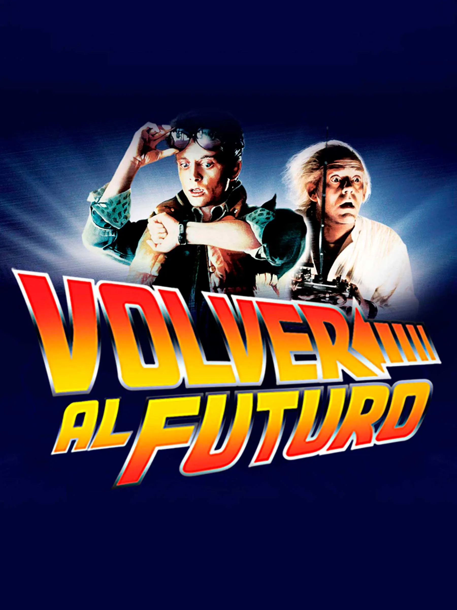

Lanzada en 1985, Back to the Future no solo redefinió el género de la ciencia ficción, sino que se consolidó como el guion perfecto para muchos analistas de cine. La historia de Marty McFly y Emmett Brown trasciende el simple viaje en el tiempo para convertirse en una exploración sobre cómo nuestras decisiones presentes moldean el futuro. Bajo la dirección de Robert Zemeckis y la producción de Steven Spielberg, la película logró un equilibrio magistral entre el humor, la aventura y la tensión técnica. A través de un ritmo narrativo impecable, la trilogía nos transporta por los cambios socioculturales de los Estados Unidos, utilizando a Hill Valley como un escenario vivo que muta, se degrada y florece según las acciones de sus visitantes temporales. Hoy, décadas después, sigue siendo una referencia obligatoria en el estudio de la narrativa cinematográfica y el uso de efectos visuales prácticos.
